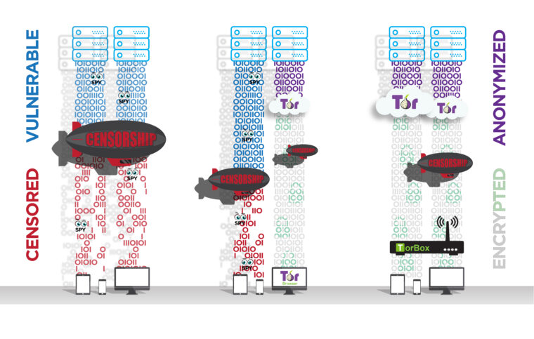
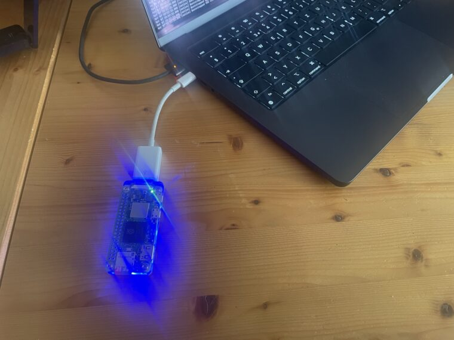

TorBox is an easy-to-use, anonymising router based on Raspberry Pi, which also runs on Debian, DietPi and Ubuntu-based systems. TorBox can create a separate WiFi that routes the encrypted network data over the Tor network. However, TorBox also supports clients who are connected to a cable. As TorBox mini, it can be plugged into an USB socket and be used as a network device which sends all the traffic to the Tor network. TorBox on a Cloud can be used on a cloud combined with an OpenVPN server — it is literally a private VPN with tor functionality. Locally installed or on a cloud, TorBox also helps to publish data easily and safely through Onion Services. The type of client (desktop, laptop, tablet, mobile, etc.) and the operating system on the client don’t matter.
TorBox Image (about 2 GB): v.0.5.5 (22.03.2026) – SHA-256 values
TorBox mini Image (about 2 GB): v.0.5.5 (22.03.2026) – SHA-256 values
• • •
Tor, on which TorBox is based, encrypts your network data from your client to the Tor exit node, overcomes censorship, and anonymises your data stream. Commonly, Tor is used by the Tor Browser, which facilitates surfing the web or accessing onion services (.onion – Websites). However, there are also other programs using Tor, like the peer-to-peer messenger app Ricochet Refresh, TorBirdy (an extension for Mozilla Thunderbird) and OnionShare. Though wouldn’t it be convenient to route all your data through the Tor network, regardless of the client, service, or program used?
TorBox accomplishes this by creating a separate WiFi and routing all network data over the Tor network. Clients can also connect to a TorBox via an Ethernet cable. A plugged-in TorBox mini creates a network device that routes all data over the Tor network, and, in the case of TorBox on a Cloud, all data sent to this VPN server will be routed through the Tor network. TorBox can be connected to an Internet router through an Ethernet cable, but it can also be used in connection with another (unsecured) WiFi, even if it has a captive portal.


• • •
A word of warning!
Use it at your own risk!
TorBox is ideal for providing additional protection for the entire data stream up to the Tor network and overcoming censorship. However, anonymity is hard to get – solely using Tor doesn’t guarantee it. Traffic correlation analysis, malware, cookies, Java, Flash, JavaScript, and more will most certainly compromise your anonymity. Even the people from the Tor Project themselves state that “Tor can’t solve all anonymity problems. It focuses only on protecting the transport of data.” Therefore, it is strongly advised not to rely on TorBox alone if your well-being depends on your anonymity. In such a situation, it may be better to use Tails. Please, read in the FAQ more about tracking and fingerprinting in web browsers.
• • •
Where to go from here?

- Download the latest TorBox image and verify the integrity of the downloaded file.
- Transfer the downloaded image file to a SD Card. Because of the significantly better compression rate, we compress the images with xz. By default, Balena Etcher and Raspberry Pi Imager support this kind of compressed image, but sometimes one or the other fails with an error message to flash it correctly on a SD Card. In this case, you need to decompress the .xz file first. TorBox needs at least a 16 GB SD Card.
- Put the SD Card into your Raspberry Pi, link it with an Internet router using an Ethernet cable, or place an USB WiFi adapter in one of the USB ports to use an existing WiFi. Afterwards, start the Raspberry Pi. During the start, the system on the SD card automatically expands over the entire free partition – user interaction, screen, and peripherals are not required yet.
- After 2-3 minutes, when the green LED stops flickering, connect your client to the new WiFi “TorBox055” (password: CHANGE-IT).
- Login to the TorBox by using a SSH client (192.168.42.1 on a WiFi client, 192.168.43.1 on a cable client or 192.168.44.1 when connected via VPN or if you use TorBox mini on a Raspberry Pi Zero 2 W as a RNDIS/Ethernet Gadget) or a web browser (http://192.168.42.1 on a WiFi client, http://192.168.43.1 on a cable client or 192.168.44.1 when connected via VPN or when using TorBox mini; username: torbox / password: CHANGE-IT).
- After seeing a welcome screen and answering some initial questions during the first start-up, you should see the TorBox Main Menu. Immediately, you should change the default passwords (the associated entries are placed in the configuration sub-menu).
We recommend running TorBox on a Raspberry Pi 3 Model B+, a Raspberry Pi 4 Model B or a Raspberry Pi 5. We also offer installation scripts for other systems, which might run on older (32-bit) or other hardware platforms.

• • •
Features
- TorBox routes all your network data through the Tor network. At the same time, TorBox acts as an external firewall and prevents IP leakage. It also can block insecure HTTP requests. However, optionally, TorBox can also exclude domains from be routed through the Tor network.
- With a menu system that can be accessed by a SSH client or a web browser, TorBox provides a user-friendly interface.
- TorBox supports Internet access via cable (Ethernet), WiFi, tethering devices, cellular links, USB dongles (
wlan1/eth1/ppp0/usb0), and VPN connections (tun0). - Clients can connect TorBox via WiFi (in most cases, an additional USB WiFi adapter is necessary), cable (simultaneously; see here), plugged into an USB socket as a network device (TorBox mini) or as a private VPN with tor functionality (TorBox on a Cloud).
- It easily overcomes captive portals and offers, if necessary, measures against “disconnect when idle features” (sometimes seen with WiFis in airports, hotels, coffee houses, etc.).
- TorBox supports OBFS4, Meek-Azure and Snowflake bridges, which help to overcome censorship (with an easy to use interface).
- Also, TorBox supports Onion Services which allow easily and securely sharing of data through Tor and chatting securely accessing an .onion domain, even if TorBox is located behind firewalls, network address translators or placed in a censoring country while preserving the security and anonymity of both parties.
- If you have a public IP address, 24/7 Internet connectivity over a long time, and a bandwidth of at least 1 Mbps, TorBox can provide a bridge relay, easily configurable via a user-friendly interface to allow censored users access to the open Internet.
- It provides SOCKS v5 proxy functionality on the ports 9050 (standard) and 9052 (with destination address stream isolation).
- It allows easy access to .onion websites without client configuration (Chrome and Chromium) with a minor change in the settings (Brave) or via SOCKS v5 proxy (Mullvad and Firefox).
• • •
Alternative installation method with the TorBox installation script
Alternatively, you can download the latest version of Raspberry Pi OS Lite (64-bit) or Raspberry Pi OS Lite (32-bit), or use the Raspberry Pi Imager and choose, under Operating System, Raspberry Pi OS (other), the Raspberry Pi OS Lite (64-bit) or Raspberry Pi OS Lite (32-bit) image. Starting up the Raspberry Pi OS for the first time, the first-boot wizard enforces the creation of a new user account –> use torbox and your preferred password. Optionally, localize your installation with raspi-config. Ensure stable Internet connectivity, download and execute our installation script (for options, use --help):
cd wget https://raw.githubusercontent.com/radio24/TorBox/master/install/run_install.sh chmod a+x run_install.sh ./run_install.sh
See here for more detailed information and installation scripts for other systems, which might run on different hardware platforms.
TorBox mini on a Raspberry Pi Zero 2 W
Sometimes, a Raspberry Pi 3 Model B+, a Raspberry Pi 4 Model B or a Raspberry Pi 5 is too big or expensive to use, and a TorBox on a cloud is not a feasible solution. Wouldn’t it be nice if TorBox would be smaller and stealthier? That’s precisely the aim of the TorBox mini. You can find the detailed installation instructions here. 

Building from scratch
All you need to run TorBox on your Raspberry Pi is the image file. However, if you want to build it from scratch, whether you like to implement it to an existing system, to another hardware, respectively another operating system or you don’t trust an image file, which you didn’t bundle of your own, then check out our detailed manual for a Raspberry Pi with Raspberry Pi OS Lite.
I want to help…
GREAT! There is a lot to improve and to fix (security of the entire system, graphical menu, cool logos …). We are searching for people who want to help, and we need especially your feedback to improve the system. You can start to contribute to our GitHub page or contact us. Also, look for our Job Postings. You can also donate to the Tor Project — without it, TorBox would not exist.
Contact
For secure email communication, we are using for the TorBox email Protonmail. All messages between Protonmail users are automatically end-to-end encrypted. Additionally, all messages in Protonmail inboxes are protected with PGP encryption to prevent Protonmail (or anyone else) from reading or sharing emails, a concept known as zero-access encryption. Creating a Protonmail email address is free and takes less than a minute. With Protonmail, anyone can use PGP regardless of their technical knowledge. However, technically versed, can also use our public PGP key to communicate with us:
-----BEGIN PGP PUBLIC KEY BLOCK----- Version: OpenPGP.js v4.10.10 Comment: https://openpgpjs.org xjMEXemNYRYJKwYBBAHaRw8BAQdAH22RKj/kZRqZds03njk7tSFEgrYkbeFo PRC3CwA2JwPNI2Fub255bUB0b3Jib3guY2ggPGFub255bUB0b3Jib3guY2g+ wncEEBYKAB8FAl3pjWEGCwkHCAMCBBUICgIDFgIBAhkBAhsDAh4BAAoJEOhJ KVODQehAkY8A/A7vPC+6nPaGBiv7P6wryQ+THA97uEwRK0Rsx3TYlKHuAQDN M4XH5G++eqqptaEv1daJEofwOnYxahJoHzYvdfZUBM44BF3pjWESCisGAQQB l1UBBQEBB0Cp+yT4Ec5kmGaGWneulB/KSgXLkkMSVaD++dC9mrcTfQMBCAfC YQQYFggACQUCXemNYQIbDAAKCRDoSSlTg0HoQArZAQD94cT2csOWOsqqx7+q Ps0P1Udn2/jXRbO+XbfzBzjM6wEAq4Z4g0w03KkHC3aU8/fATEnbN2+TInLV gNKTldrMtAg= =eGoI -----END PGP PUBLIC KEY BLOCK-----
OpenPGP key file: publickey.anonym@torbox.ch-69e114c5c446133a0489a6c0e84929538341e840.asc